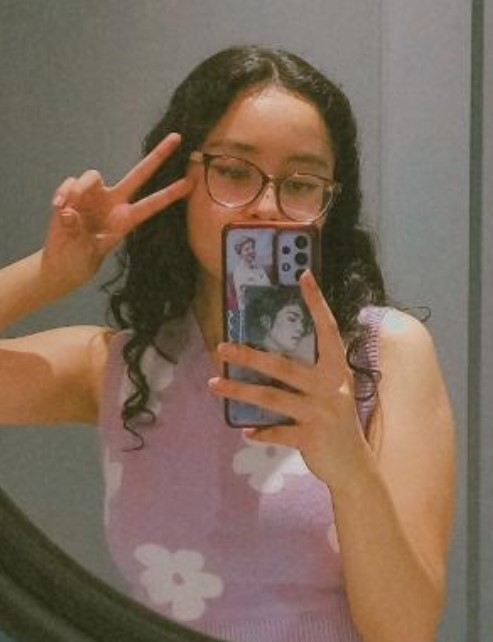
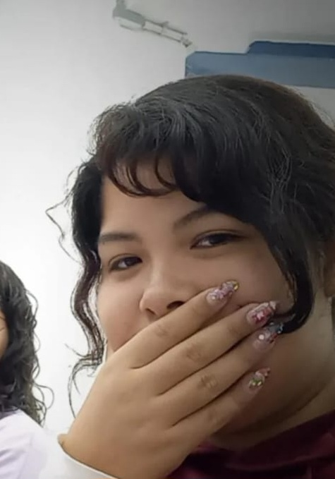
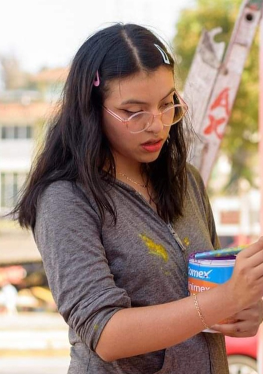
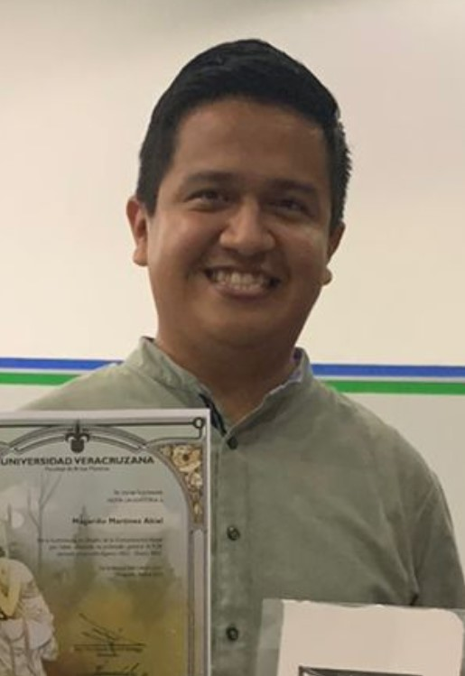
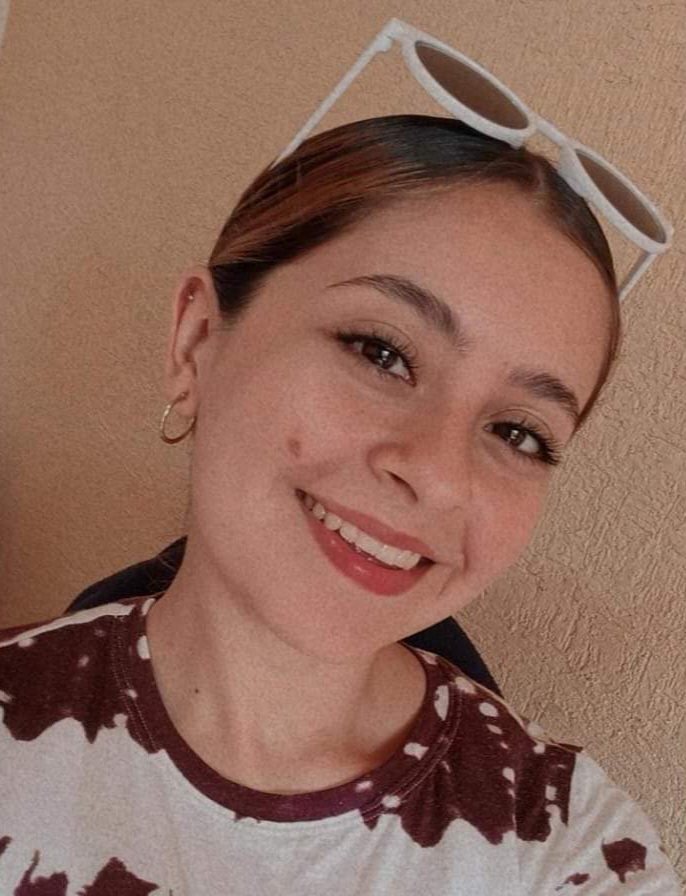

|

|
Karolina Zavaleta |
22 |
@karo_zavaleta_ |
Es de las primeras amigas que hice en la universidad, era la que siempre respondía mis dudas y yo las de ellas cuando no entendíamos una clase. |
|

|
Nelsy Aguirre |
21 |
@negativoafirmativo |
A ella me la presentaron un poco antes de entrar a la universidad en un curso de inducción, pero no hablamos formalmente hasta coincidir en varias clases, instáneamente nos llevamos bien. |
|

|
Kenia Lara |
24 |
@yellowpuffly |
Nos conocimos en quinto semestre, ella ya había egresado de artes visuales en mi facultad sin embargo logramos coincidir en algunas clases de mi carrera. |
|

|
Abiel Magariño |
24 |
@abielmagariño |
Nos lo presentó Nelsy en cuarto semestre, él es foráneo y le dimos un tour por mi ciudad, coincidimos en varias clases y nos terminamos llevando muy bien. |
|

|
Zarife Gómez |
21 |
@zarifegh |
Coincidimos en clases desde los primeros semestres, además es la representante de nuestra generación en la facultad, así que es de las más serviciales y amables que hay. |